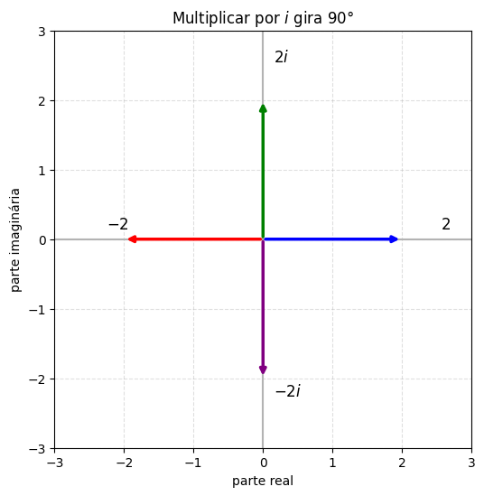
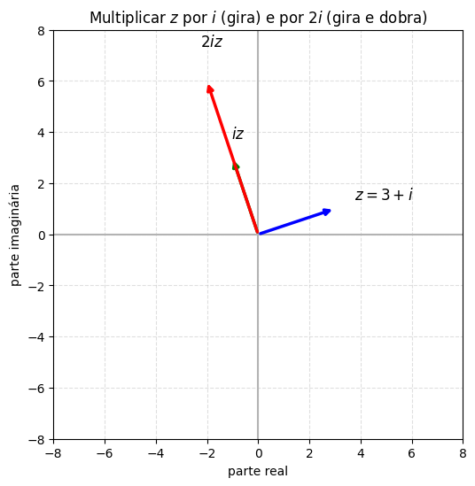

Raízes Complexas#
Já resolvemos \(ay''+by'+cy=0\) para \(\Delta>0\) (raízes reais distintas) e \(\Delta=0\) (raiz repetida). Falta o terceiro e último caso: \(\Delta<0\).
Um exemplo que “quebra” tudo de novo#
Vamos tentar resolver, do jeito de sempre,
Substituindo \(y=e^{rt}\), a equação característica é
Pela fórmula de Bhaskara,
E aqui travamos: \(\sqrt{-16}\) não existe, pelo menos não entre os números que conhecemos até agora; nenhum número real, multiplicado por ele mesmo, dá \(-16\).
Mesmo assim, vamos dar um “spoiler”: a solução geral dessa equação é
É fácil verificar que essa função satisfaz a equação, substituindo e simplificando (ou deixando o Python fazer as contas):
Repare nos números que apareceram: o expoente da exponencial é \(1\), e o argumento do cosseno e do seno é \(2t\). Compare com a fórmula de Bhaskara: se a gente ousasse escrever \(\sqrt{-16}=4i\) (usando um tal de \(i\) que ainda não definimos direito), teríamos
O \(1\) é exatamente o expoente da exponencial que apareceu na solução. O \(2\) é exatamente o número que multiplica \(t\) dentro do cosseno e do seno. Não é coincidência, e para entender por quê, precisamos aprender (ou relembrar) um pouco sobre números complexos.
Uma pausa para números complexos#
Você provavelmente já ouviu, no ensino médio, que “não existe raiz quadrada de número negativo”. Isso é verdade entre os números reais, mas nada nos impede de definir um novo número que resolva esse problema. Chamamos esse número de \(i\):
Com essa única peça nova, conseguimos escrever a raiz quadrada de qualquer número negativo: \(\sqrt{-16}=\sqrt{16}\cdot\sqrt{-1}=4i\).
Um número complexo é uma expressão da forma \(z=a+bi\), com \(a,b\) reais: \(a\) é a parte real de \(z\), e \(b\) é a parte imaginária.
Representando números complexos como vetores#
Uma forma muito útil de visualizar números complexos é como pontos (ou vetores) num plano: o eixo horizontal representa a parte real, e o eixo vertical, a parte imaginária.
O que acontece quando multiplicamos um número complexo por \(i\)? Vamos testar, partindo do número real \(2\) (o vetor \((2,0)\)) e multiplicando por \(i\) repetidamente:
Vamos desenhar esses quatro vetores:
import numpy as np
import matplotlib.pyplot as plt
def desenha_vetor(z, ax, cor, rotulo):
ax.annotate('', xy=(z.real, z.imag), xytext=(0, 0),
arrowprops=dict(arrowstyle='-|>', color=cor, lw=2.5))
ax.annotate(rotulo, xy=(z.real, z.imag),
xytext=(z.real*1.2 + 0.15, z.imag*1.2 + 0.15), fontsize=12)
fig, ax = plt.subplots(figsize=(6, 6))
z = 2 + 0j
zs = [z, 1j*z, 1j**2*z, 1j**3*z]
rotulos = ['$2$', '$2i$', '$-2$', '$-2i$']
cores = ['b', 'g', 'r', 'purple']
for zz, rot, cor in zip(zs, rotulos, cores):
desenha_vetor(zz, ax, cor, rot)
lim = 3
ax.set_xlim(-lim, lim); ax.set_ylim(-lim, lim)
ax.axhline(0, color='0.7'); ax.axvline(0, color='0.7')
ax.set_aspect('equal')
ax.set_xlabel('parte real'); ax.set_ylabel('parte imaginária')
ax.set_title(r"Multiplicar por $i$ gira $90°$")
ax.grid(True, linestyle='--', alpha=0.4)
plt.show()

Cada multiplicação por \(i\) girou o vetor exatamente \(90°\) (um quarto de volta), sem mudar o tamanho.
Isso não vale só para números reais, funciona para qualquer número complexo. E multiplicar por \(2i\), por exemplo, gira \(90°\) e dobra o tamanho (afinal, \(2i\) “vale” o dobro de \(i\)):
fig, ax = plt.subplots(figsize=(6, 6))
z = 3 + 1j
zs = [z, 1j*z, 2j*z]
rotulos = ['$z=3+i$', '$iz$', '$2iz$']
cores = ['b', 'g', 'r']
for zz, rot, cor in zip(zs, rotulos, cores):
desenha_vetor(zz, ax, cor, rot)
lim = 8
ax.set_xlim(-lim, lim); ax.set_ylim(-lim, lim)
ax.axhline(0, color='0.7'); ax.axvline(0, color='0.7')
ax.set_aspect('equal')
ax.set_xlabel('parte real'); ax.set_ylabel('parte imaginária')
ax.set_title(r"Multiplicar $z$ por $i$ (gira) e por $2i$ (gira e dobra)")
ax.grid(True, linestyle='--', alpha=0.4)
plt.show()

Essa rotação de \(90°\) tem tudo a ver com oscilações: numa oscilação (um pêndulo, uma mola, um circuito), a velocidade está sempre defasada da posição por um quarto de período, exatamente \(90°\). Não é à toa que números complexos aparecem naturalmente quando resolvemos equações que descrevem oscilações.
A série de potências e a fórmula de Euler#
No cálculo de séries, aprendemos que a função exponencial pode ser escrita como uma série de potências:
Essa fórmula vale para qualquer número \(x\). E vale inclusive para \(x=i\theta\) (com \(\theta\) real):
Usando \(i^2=-1,\ i^3=-i,\ i^4=1,\ i^5=i,\dots\) (as potências de \(i\) se repetem a cada 4) e separando os termos com \(i\) dos termos sem \(i\):
Cada uma dessas séries entre parênteses já é uma velha conhecida do Cálculo: são exatamente as séries de Taylor do cosseno e do seno!
Chegamos, então, à famosa fórmula de Euler:
Voltando à EDO: a solução geral#
Agora podemos entender de onde veio a “mágica” do início da aula. Para \(ay''+by'+cy=0\) com \(\Delta=b^2-4ac<0\), a fórmula de Bhaskara dá raízes complexas conjugadas:
Como sempre, \(y_1=e^{r_1t}\) e \(y_2=e^{r_2t}\) são soluções, só que, agora, são funções complexas. Usando a fórmula de Euler:
Lembre-se que, para raízes reais e distintas, tínhamos duas soluções fundamentais \(e^{r_1t}\) e \(e^{r_2t}\), e a solução geral era qualquer combinação linear delas, formando um espaço de soluções de “dimensão 2” (duas constantes livres, ajustáveis a qualquer condição inicial). Aqui é a mesma história, \(y_1\) e \(y_2\) formam uma base para esse mesmo espaço de soluções, só que uma base complexa.
Assim como num espaço vetorial comum podemos trocar de base sem mudar o espaço (trocar \(\{(1,0),(0,1)\}\) por qualquer outro par de vetores independentes, por exemplo), podemos trocar \(\{y_1,y_2\}\) por qualquer combinação linear independente delas. Em particular:
são soluções (combinação linear de soluções continua sendo solução) e, com uma vantagem enorme, são reais. Trocamos a base complexa e pouco intuitiva \(\{y_1,y_2\}\) pela base real \(\{Y_1,Y_2\}\). A solução geral fica
Exatamente a fórmula que usamos, sem explicar, lá no início da aula!
Exemplo 1#
Encontre a solução geral de
Equação característica: \(r^2+4r+13=0\). O discriminante é \(\Delta=16-52=-36<0\), então
Aqui \(\lambda=-2\) e \(\mu=3\), então a solução geral é
Exemplo 2#
Encontre a solução geral de
Equação característica: \(r^2+1=0 \Rightarrow r^2=-1 \Rightarrow r=\pm i\). Aqui \(\lambda=0\) e \(\mu=1\). Como \(e^{\lambda t}=e^{0}=1\), a solução geral é simplesmente
O que vem a seguir#
Agora as três peças do quebra-cabeça estão completas: sabemos resolver \(ay''+by'+cy=0\) para \(\Delta>0\), \(\Delta=0\) e \(\Delta<0\). E de brinde, ganhamos uma explicação para algo que já tínhamos visto, mas não explicado: lá na aula de modelagem, o caso subamortecido do sistema massa-mola (e do circuito RLC) era justamente aquele que oscilava enquanto decaía, e agora sabemos por quê: é exatamente quando a equação característica tem raízes complexas, com \(\lambda<0\) ditando o decaimento e \(\mu\) ditando a frequência da oscilação.
Nas próximas aulas, vamos usar essas três receitas como base para resolver equações não homogêneas (\(F(t)\neq0\)) — e, com isso, finalmente entender de verdade o oscilador harmônico forçado, incluindo batimento e ressonância.